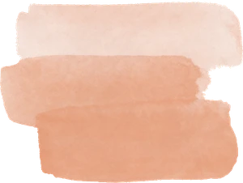
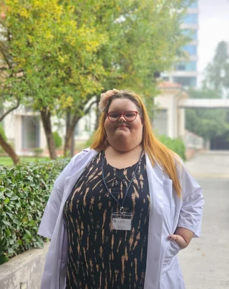
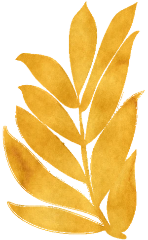
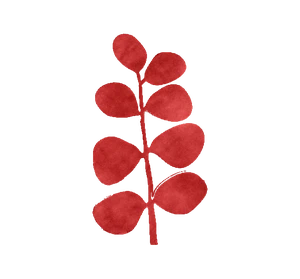
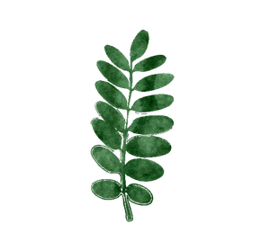
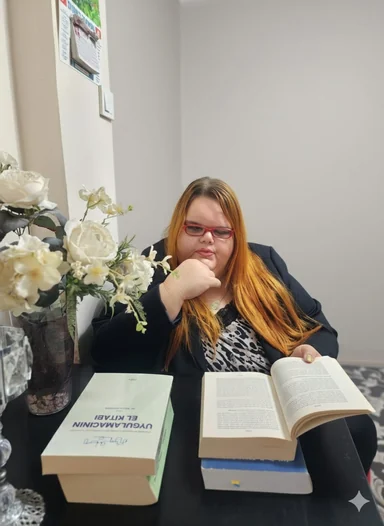
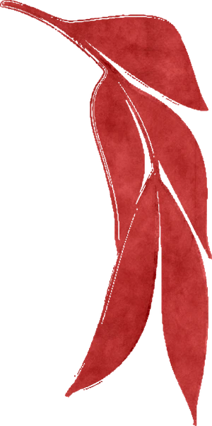

Psikolog ve Aile Danışmanı
Gözen Durmuş
Psikolog ve aile danışmanı Gözen Durmuş, İstanbul Kültür Üniversitesi Psikoloji Bölümü mezunu. Mesleki yaklaşımında bilimsel psikolojiyle yaşanmış deneyimden gelen empatiyi bir araya getiriyor.
Çocukluk dönemindeki sağlık sorunları, akran zorbalığı ve sosyal dışlanma deneyimleri mesleki yaklaşımını şekillendirdi. Eğitimini açık öğretimle sürdürdü ve psikoloji öğrenimini üniversitede tamamladı.

Empati
Beden algısı, obezite ve zorbalık deneyimlerinin duygusal yönlerine yargısız bir bakış.

Dayanıklılık
Kayıp ve zorlu yaşam olayları karşısında dayanıklılık ve kişinin kendi kaynaklarını fark etmesi üzerine bir bakış.

Bilimsel yaklaşım
Psikolojiye ilişkin konuları ele alırken bilimsel bilgiye ve mesleki etik ilkelere verdiği önem.
Gözen Durmuş’un Hikâyesi
Sağlık mücadelesi ve akran zorbalığı
Bebeklikte geçirdiği sağlık sorunu ve kortizon tedavisinin ardından başlayan obezite deneyimi, çocuklukta dışlanma ve zorbalıkla bir araya geldi. Bu deneyimler, beden algısı ve zorbalığa ilişkin bakış açısını şekillendirdi.
Eğitim yolculuğu
Sağlık sorunları ve ailesini küçük yaşta kaybetmesi örgün eğitime devam etmesini güçleştirdi. Açık öğretimde ilk ve ortaöğretimini tamamladı, kendi çabasıyla yabancı dil öğrendi ve İstanbul Kültür Üniversitesi’nde psikoloji okudu.
Mesleki ilgi alanları
Beden algısı, duygusal yeme, akran zorbalığı ve aile içi iletişim mesleki ilgi alanları arasında.
Toplumsal farkındalık
Basın ve dijital platformlardaki söyleşilerinde akran zorbalığı, obeziteye yönelik önyargılar ve psikolojik dayanıklılık konularını ele alıyor.


Bilimsel yaklaşım ve yaşanmış deneyim
Psikolojiye bakışında empati, dayanıklılık ve mesleki etik.